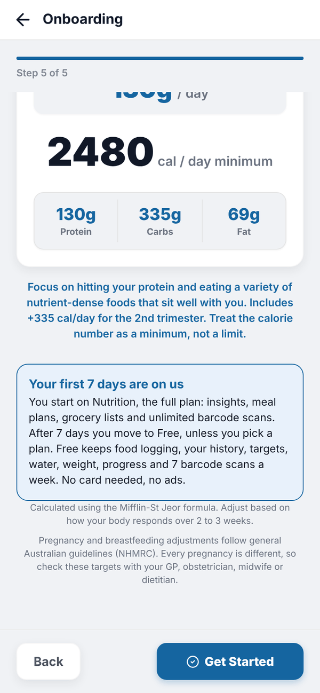
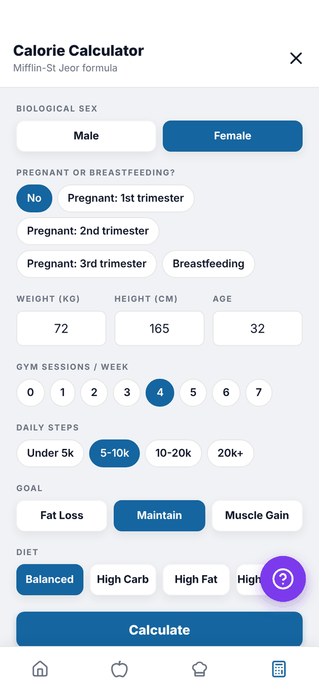
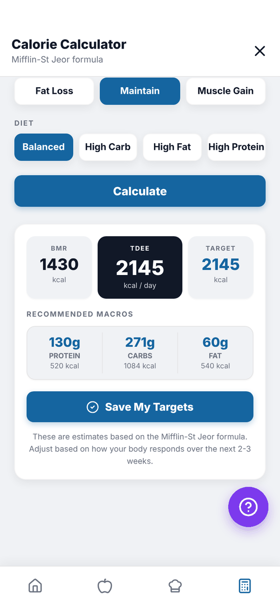
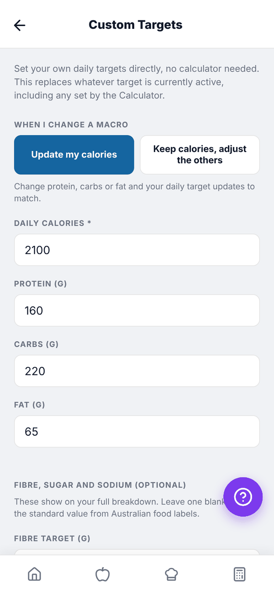
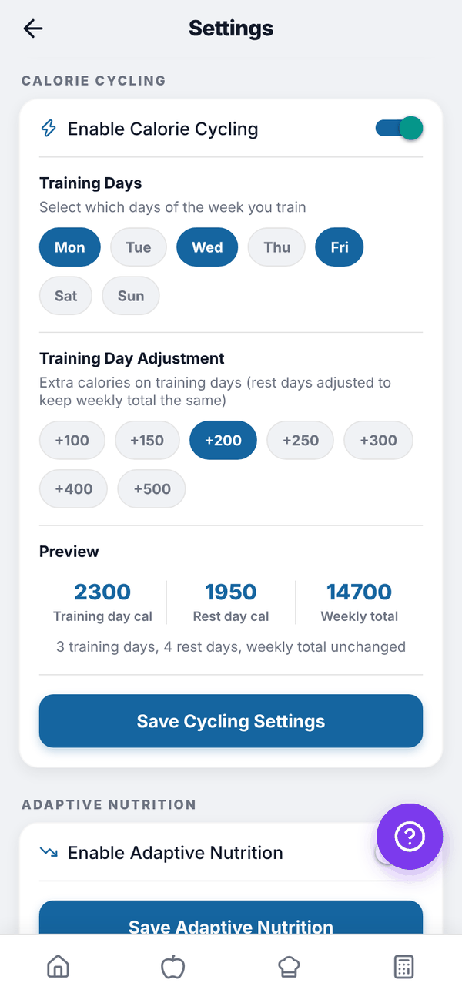

Totality Nutrition guide
Your targets
How your calorie and macro targets are worked out, how to change them, and how pregnancy, breastfeeding, calorie cycling and Adaptive Nutrition affect them.
Your targets are the daily calories (or kJ) and grams of protein, carbs and fat that Home and your food log measure you against. They're set in onboarding and you can change them any time. Targets work the same on Free, Trial and Paid.
How the numbers are worked out#
The app uses the Mifflin-St Jeor formula.
- BMR (what your body burns at rest) comes from your weight, height, age and sex.
- TDEE (what you burn in a day) is your BMR multiplied up for activity. In onboarding this uses your training days plus a moderate amount of daily walking. In the Calculator you also choose your Daily steps.
- Your goal adjusts it. Lose Weight takes off 500 calories a day, Build Muscle adds 300, and Improve Fitness and General Health stay at maintenance. Targets never go below 1,200 calories.
- Protein is set per kilo of body weight: 2.2 g/kg to lose weight, 2.0 g/kg to build muscle and 1.8 g/kg otherwise.
- Fat is 25% of your calories, and carbs fill the rest.
The app suggests you adjust based on how your body responds over 2 to 3 weeks.
Pregnancy and breastfeeding#
If you choose a pregnancy or breastfeeding option, the targets change to suit:
| Option | What changes |
|---|---|
| Pregnant: 1st trimester | Maintenance calories, no extra energy yet |
| Pregnant: 2nd trimester | Maintenance plus about 335 calories a day |
| Pregnant: 3rd trimester | Maintenance plus about 455 calories a day |
| Breastfeeding | Maintenance plus about 480 calories and 21 g protein a day |
There is no calorie deficit while pregnant or breastfeeding, so Lose Weight is treated as maintenance. While pregnant there is no muscle gain surplus either. Breastfeeding can use Maintain or Muscle Gain in the Calculator, never Fat Loss.
Your results lead with protein ("YOUR MAIN FOCUS: PROTEIN"), and the calorie number is shown as a minimum, not a limit. Home and the food log then say "to go" and "Minimum reached" instead of "remaining" and "over". Calorie Cycling and Adaptive Nutrition are switched off for these targets, because both create days below target.

Recalculate with the Calculator#
The Calculator tab (the calculator icon on the bottom bar), also reached from Settings, Recalculate Targets, works your targets out again. It fills in your sex, latest weight, height, age and training days from what you've already told the app.
- Check Biological sex, and the pregnancy question if it shows.
- Check Weight, Height and Age.
- Pick Gym sessions / week (0 to 7) and Daily steps (Under 5k, 5-10k, 10-20k or 20k+).
- Pick a Goal: Fat Loss, Maintain or Muscle Gain. For Fat Loss or Muscle Gain, also pick a Pace. Fat Loss takes off 250, 500 or 750 calories; Muscle Gain adds 150, 300 or 500.
- Pick a Diet: Balanced, High Carb (20% fat), High Fat (35% fat) or High Protein (an extra 0.3 g/kg protein).
- Tap Calculate. You see your BMR, TDEE, target and recommended macros.
- Tap Save My Targets.


Saving makes these your current targets straight away. Your food log measures every day you look at against your current targets.
Type your own targets#
Settings, Custom Targets lets you type Daily calories (or daily energy in kJ), Protein (g), Carbs (g) and Fat (g) yourself, then Save Targets. This replaces whatever target is currently active. Protein, carbs and fat need at least 1 g each.
Under WHEN I CHANGE A MACRO, pick how the numbers move together:
- Update my calories (or Update my kJ): change protein, carbs or fat and your daily target updates to match.
- Keep calories, adjust the others: your daily target stays the same. Change one macro and the other two share what is left.
A line underneath says "Matches your daily target." when everything adds up.
Fibre, sugar and sodium#
Under FIBRE, SUGAR AND SODIUM (OPTIONAL) you can set your own FIBRE TARGET (G), SUGAR LIMIT (G) and SODIUM LIMIT (MG). Leave them blank to use the standard label values (30 g fibre, 90 g sugar, 2,300 mg sodium). Your own numbers show on Breakdown as "Your target" or "Your limit".
If you're pregnant or breastfeeding#
Custom Targets starts on Keep calories, adjust the others, because your calories are a minimum, not a limit. If you save numbers that lower your calories or put protein under the recommended amount, the app asks you to Check with your care team first. Only save them if your GP, midwife or dietitian gave you those numbers.

Calorie cycling#
Calorie cycling gives you more on training days and less on rest days, with the same weekly total. Find it in Settings, CALORIE CYCLING.
- Turn on Enable Calorie Cycling.
- Tap your Training Days.
- Pick a Training Day Adjustment: +100 to +500 calories.
- Check the Preview: training day, rest day and weekly total.
- Tap Save Cycling Settings.

Your food log then shows a Training day or Rest day badge under the date.
Adaptive Nutrition#
With Enable Adaptive Nutrition on (then Save Adaptive Nutrition), the app checks every night whether you went over your calorie target the day before. If you did, today's target drops to make up for it, by up to 500 calories a day, with any leftover carried to the next day. It never drops below a 1,200 calorie floor. Protein stays fixed and carbs and fat shrink. Home shows an Adjusted badge on those days.
Calorie cycling and Adaptive Nutrition can't both be on. Turning one on turns the other off.
Questions#
My trainer sets my targets in Totality. Which ones does Nutrition use?
The most recent targets, whoever set them. If you save new ones in the Calculator or Custom Targets, those become your current targets. See Using Nutrition with a Totality trainer.
Why is my calorie number shown as a minimum?
Your targets are set for pregnancy or breastfeeding. The aim is to eat at least that much.
Can I use kJ instead of calories?
Yes. Change Energy to kJ in Settings, Units and region. Everything is shown and typed in kJ.
Why can't I turn on Calorie Cycling?
It's switched off while your targets are set for pregnancy or breastfeeding, since rest days would drop below your minimum. Save non-pregnancy targets in the Calculator first if that no longer applies.